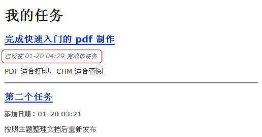
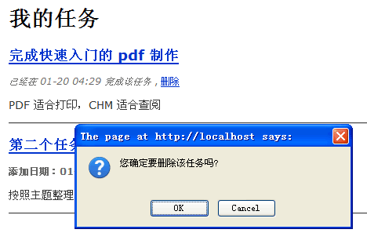
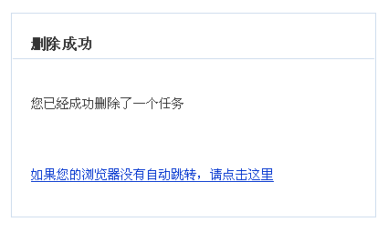

修改和删除任务
修改工作非常简单，在 tasks 控制器中添加如下代码即可：
1 2 3 4 5 6 7 8 9 10 11 12 13 14 15 16 17 18 19 20 21 22 23 24 25 26 27 28 29 30 31 32 33 34
| function actionEdit() { $task = Task::find('task_id = ? AND [owner.user_id] = ?', $this->_context->task_id, $this->_app->currentUserObject()->id())->query(); if (!$task->id()) { return $this->_redirect(url('tasks/index')); } $form = new Form_Task(); if ($this->_context->isPOST() && $form->validate($_POST)) { $task->changeProps($form->values()); $task->completed($form['is_completed']->value); $task->save(); return $this->_redirect(url('tasks/index')); } $this->_view['task'] = $task; $this->_view['form'] = $form; $this->_viewname = 'create'; }
|
这个方法完成下列工作：
- 首先根据指定的 task_id 和当前用户ID查询任务对象，如果失败则重定向浏览器。这可以有效阻止用户尝试编辑不属于自己的任务。
- 如果是 POST 提交，并且表单通过了验证，则更新任务信息，并且根据是否选中了“已完成”检查框来修改任务状态。最后保存修改并重定向浏览器。
- 不是 POST 提交，则将任务对象数据导入表单，以便在表单中显示要编辑的内容。
上述代码中，之所以修改任务状态必须调用 completed() 方法，是为了因为 task 模型的 is_completed 属性非常重要，不应该“无意”中被修改。明确的 completed() 方法调用就可以避免此问题。而且当任务状态改变为“已完成”时，还需要设置任务的 completed_at 属性，以记录任务完成的时刻，completed() 方法可以同时完成这项修改。
所以我们还要在 task 模型中添加 completed() 方法：
1 2 3 4 5 6 7 8 9 10 11 12 13 14 15 16 17 18 19 20 21 22 23 24
| * 明确修改任务的状态 * * @param boolean $completed * * @return Task */ function completed($completed) { $completed = (bool)$completed; if ($completed && !$this->is_completed) { $this->changePropForce('completed_at', time()); } elseif (!$completed) { $this->changePropForce('completed_at', null); } $this->changePropForce('is_completed', $completed); return $this; }
|
相比传统的做法，面向对象的方式在初期会需要更多的代码。但是这些代码保证了逻辑的严密性和数据的有效性，应用软件规模越大，这种做法带来的好处就越多。而且随着应用规模的逐渐增长，面向对象充分重用逻辑与代码的优势就会体现出来，最终可以获得一个更健壮、内部更整洁的系统。
实际运行效果：

删除任务
删除任务功能非常简单：
1 2 3 4 5 6 7 8 9 10 11 12
| function actionDelete() { Task::meta()->destroyWhere('task_id = ? AND [owner.user_id] = ?', $this->_context->task_id, $this->_app->currentUserObject()->id()); return $this->_redirectMessage( '删除成功', '您已经成功删除了一个任务', url('tasks/index')); }
|
修改一下 app/tasks/index.php 视图，将删除任务的连接加进去：
1 2 3 4 5 6 7 8
| <p class="meta"> <?php if ($task->is_completed): ?> <em>已经在 <?php echo date('m-d H:i', $task->completed_at); ?> 完成该任务</em> <?php else: ?> <strong>添加日期：<?php echo date('m-d H:i', $task->created); ?></strong> <?php endif; ?> , <a href="<?php echo url('tasks/delete', array('task_id' => $task->id())); ?>" onclick="return confirm('您确定要删除该任务吗?');">删除</a> </p>
|
运行效果：

